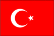
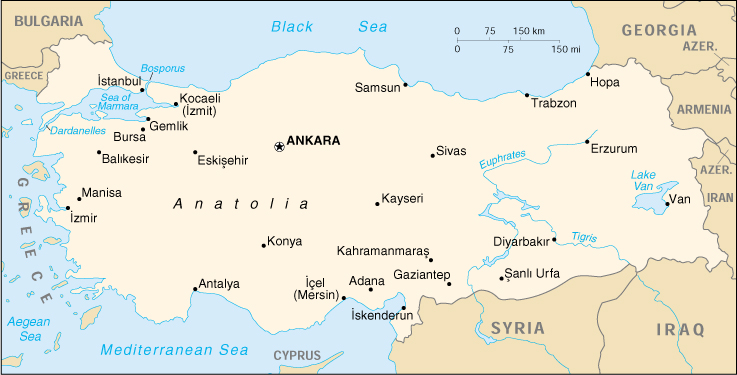

{kind=link}


| Turkey |  |
|
|  | |
| Introduction |
Background: Turkey was created in 1923 from the Turkish remnants of the Ottoman Empire. Soon thereafter the country instituted secular laws to replace traditional religious fiats. In 1945 Turkey joined the UN and in 1949 it became a member of NATO. Turkey occupied the northern portion of Cyprus in 1974 to prevent a Greek takeover of the island; relations between the two countries remain strained. Periodic military offensives against Kurdish terrorists have dislocated part of the population in southeast Turkey and have drawn international condemnation.
| Geography |
Location: southeastern Europe and southwestern Asia (that portion of Turkey west of the Bosporus is geographically part of Europe), bordering the Black Sea, between Bulgaria and Georgia, and bordering the Aegean Sea and the Mediterranean Sea, between Greece and Syria
Geographic coordinates: 39 00 N, 35 00 E
Map references: Middle East
Area:
total:
780,580 sq km
land:
770,760 sq km
water:
9,820 sq km
Area - comparative: slightly larger than Texas
Land boundaries:
total:
2,627 km
border countries:
Armenia 268 km, Azerbaijan 9 km, Bulgaria 240 km, Georgia 252 km, Greece 206 km, Iran 499 km, Iraq 331 km, Syria 822 km
Coastline: 7,200 km
Maritime claims:
exclusive economic zone:
in Black Sea only: to the maritime boundary agreed upon with the former USSR
territorial sea:
6 nm in the Aegean Sea; 12 nm in Black Sea and in Mediterranean Sea
Climate: temperate; hot, dry summers with mild, wet winters; harsher in interior
Terrain: mostly mountains; narrow coastal plain; high central plateau (Anatolia)
Elevation extremes:
lowest point:
Mediterranean Sea 0 m
highest point:
Mount Ararat 5,166 m
Natural resources: antimony, coal, chromium, mercury, copper, borate, sulfur, iron ore, arable land, hydropower
Land use:
arable land:
32%
permanent crops:
4%
permanent pastures:
16%
forests and woodland:
26%
other:
22% (1993 est.)
Irrigated land: 36,740 sq km (1993 est.)
Natural hazards: very severe earthquakes, especially in northern Turkey, along an arc extending from the Sea of Marmara to Lake Van
Environment - current issues: water pollution from dumping of chemicals and detergents; air pollution, particularly in urban areas; deforestation; concern for oil spills from increasing Bosporus ship traffic
Environment - international agreements:
party to:
Air Pollution, Antarctic Treaty, Biodiversity, Desertification, Endangered Species, Hazardous Wastes, Nuclear Test Ban, Ozone Layer Protection, Ship Pollution, Wetlands
signed, but not ratified:
Antarctic-Environmental Protocol, Environmental Modification
Geography - note: strategic location controlling the Turkish Straits (Bosporus, Sea of Marmara, Dardanelles) that link Black and Aegean Seas
| People |
Population: 65,666,677 (July 2000 est.)
Age structure:
0-14 years:
29% (male 9,722,217; female 9,375,920)
15-64 years:
65% (male 21,671,638; female 20,966,110)
65 years and over:
6% (male 1,811,599; female 2,119,193) (2000 est.)
Population growth rate: 1.27% (2000 est.)
Birth rate: 18.65 births/1,000 population (2000 est.)
Death rate: 5.96 deaths/1,000 population (2000 est.)
Net migration rate: 0 migrant(s)/1,000 population (2000 est.)
Sex ratio:
at birth:
1.05 male(s)/female
under 15 years:
1.04 male(s)/female
15-64 years:
1.03 male(s)/female
65 years and over:
0.85 male(s)/female
total population:
1.02 male(s)/female (2000 est.)
Infant mortality rate: 48.9 deaths/1,000 live births (2000 est.)
Life expectancy at birth:
total population:
70.97 years
male:
68.63 years
female:
73.41 years (2000 est.)
Total fertility rate: 2.16 children born/woman (2000 est.)
Nationality:
noun:
Turk(s)
adjective:
Turkish
Ethnic groups: Turkish 80%, Kurdish 20%
Religions: Muslim 99.8% (mostly Sunni), other 0.2% (Christian and Jews)
Languages: Turkish (official), Kurdish, Arabic, Armenian, Greek
Literacy:
definition:
age 15 and over can read and write
total population:
82.3%
male:
91.7%
female:
72.4% (1995 est.)
| Government |
Country name:
conventional long form:
Republic of Turkey
conventional short form:
Turkey
local long form:
Turkiye Cumhuriyeti
local short form:
Turkiye
Data code: TU
Government type: republican parliamentary democracy
Capital: Ankara
Administrative divisions:
80 provinces (iller, singular - il); Adana, Adiyaman, Afyon, Agri, Aksaray, Amasya, Ankara, Antalya, Ardahan, Artvin, Aydin, Balikesir, Bartin, Batman, Bayburt, Bilecik, Bingol, Bitlis, Bolu, Burdur, Bursa, Canakkale, Cankiri, Corum, Denizli, Diyarbakir, Edirne, Elazig, Erzincan, Erzurum, Eskisehir, Gazi Antep, Giresun, Gumushane, Hakkari, Hatay, Icel, Igdir, Isparta, Istanbul, Izmir, Kahraman Maras, Karabuk, Karaman, Kars, Kastamonu, Kayseri, Kilis, Kirikkale, Kirklareli, Kirsehir, Kocaeli, Konya, Kutahya, Malatya, Manisa, Mardin, Mugla, Mus, Nevsehir, Nigde, Ordu, Osmaniye, Rize, Sakarya, Samsun, Sanli Urfa, Siirt, Sinop, Sirnak, Sivas, Tekirdag, Tokat, Trabzon, Tunceli, Usak, Van, Yalova, Yozgat, Zonguldak
note:
Karabuk, Kilis, Osmaniye and Yalova are the four newest provinces (there may be a fifth - Duzce); the US Board on Geographic Names is awaiting an official Turkish administrative map for verification of the boundaries
Independence: 29 October 1923 (successor state to the Ottoman Empire)
National holiday: Anniversary of the Declaration of the Republic, 29 October (1923)
Constitution: 7 November 1982
Legal system: derived from various European continental legal systems; accepts compulsory ICJ jurisdiction, with reservations
Suffrage: 18 years of age; universal
Executive branch:
chief of state: President Ahmed Necdet SEZER (since 16 May 2000)
head of government: Prime Minister Bulent ECEVIT (since 11 January 1999)
cabinet: Council of Ministers appointed by the president on the nomination
of the prime minister
note: there is also a National Security Council that serves as an advisory
body to the president and the cabinet
elections: president elected by the National Assembly for a seven-year
term; election last held 5 May 2000 (next scheduled to be held NA May 2007);
prime minister and deputy prime minister appointed by the president
election results: Ahmed Necdet SEZER elected president; percent
of National Assembly vote - 60%
Legislative branch:
unicameral Grand National Assembly of Turkey or Turkiye Buyuk Millet Meclisi (550 seats; members are elected by popular vote to serve five-year terms)
elections:
last held 18 April 1999 (next to be held NA 2004)
election results:
percent of vote by party - NA; seats by party - DSP 136, MHP 130, FP 110, DYP 86, ANAP 88; note - as of 7 March 2000 seating was DSP 136, MHP 127, FP 103, DYP 85, ANAP 88 independents 6, vacancies 5
Judicial branch: Constitutional Court, judges appointed by the president; Court of Appeals, judges are elected by the Supreme Council of Judges and Prosecutors
Political parties and leaders:
Changing Turkey Party or DEPAR [Gokhan CAPOGLU]; Democracy and Peace Party or DBP [Yilmaz CAMLIBEL]; Democratic Left Party or DSP [Bulent ECEVIT]; Democratic Party or DP [Korkut OZAL]; Democratic Turkey Party or DTP [Husamettin CINDORUK]; Enlightened Turkey Party or ATP [Tugrul TURKES]; Freedom and Solidarity Party or ODP [Ufuk URAS]; Grand Unity Party or BBP [Muhsin YAZICIOGLU]; Labor Party or EP [Ihsan CARALAN]; Liberal Democratic Party or LDP [Besim TIBUK]; Motherland Party or ANAP [Mesut YILMAZ]; My Turkey Party or TP [Durmus Ali EKER]; Nation Party or MP [Aykut EDIBALI]; Nationalist Action Party or MHP [Devlet BAHCELI]; New Democracy Movement or YDH [Huseyin ERGUN]; Peace Party or BP [Ali Haydar VEZIROGLU]; People's Democracy Party or HADEP [Turhan DEMIR]; Republican People's Party or CHP [Altan OYMEN]; Revolutionary People's Party [Meral KIDIR]; Socialist Power Party or SIP [leader NA]; True Path Party or DYP [Tansu CILLER]; Virtue Party or FP [Recai KUTAN]; Workers' Party or IP [Dogu PERINCEK]
note:
Welfare Party or RP [Necmettin ERBAKAN] was officially outlawed on 22 February 1998
Political pressure groups and leaders: Confederation of Revolutionary Workers Unions or DISK [Ridvan BUDAK]; Independent Industrialists and Businessmen's Association or MUSIAD [Erol YARAR]; Moral Rights Workers Union or Hak-Is [Salim USLU]; Turkish Industrialists' and Businessmen's Association or TUSIAD [Muharrem KAYHAN]; Turkish Confederation of Employers' Unions or TISK [Refik BAYDUR]; Turkish Confederation of Labor or Turk-Is [Bayram MERAL]; Turkish Union of Chambers of Commerce and Commodity Exchanges or TOBB [Fuat MIRAS]
International organization participation: AsDB, BIS, BSEC, CCC, CE, CERN (observer), EAPC, EBRD, ECE, ECO, ESCAP, EU (applicant), FAO, IAEA, IBRD, ICAO, ICC, ICFTU, ICRM, IDA, IDB, IEA, IFAD, IFC, IFRCS, IHO, ILO, IMF, IMO, Inmarsat, Intelsat, Interpol, IOC, IOM (observer), ISO, ITU, NATO, NEA, OAS (observer), OECD, OIC, OPCW, OSCE, PCA, UN, UNCTAD, UNESCO, UNHCR, UNIDO, UNIKOM, UNMIBH, UNMIK, UNOMIG, UNRWA, UPU, WEU (associate), WFTU, WHO, WIPO, WMO, WToO, WTrO
Diplomatic representation in the US:
chief of mission: Ambassador Baki ILKIN
chancery:
2525 Massachusetts Avenue NW, Washington, DC 20008
telephone:
[1] (202) 612-6700
FAX:
[1] (202) 612-6744
consulate(s) general:
Chicago, Houston, Los Angeles, and New York
Diplomatic representation from the US:
chief of mission: Ambassador Robert PEARSON
embassy:
110 Ataturk Boulevard, Ankara
mailing address:
PSC 93, Box 5000, APO AE 09823
telephone:
[90] (312) 468-6110
FAX:
[90] (312) 467-0019
consulate(s) general:
Istanbul
consulate(s):
Adana
Flag description: red with a vertical white crescent (the closed portion is toward the hoist side) and white five-pointed star centered just outside the crescent opening
| Economy |
Economy - overview: Turkey has a dynamic economy that is a complex mix of modern industry and commerce along with traditional village agriculture and crafts. It has a strong and rapidly growing private sector, yet the state still plays a major role in basic industry, banking, transport, and communication. Its most important industry - and largest exporter - is textiles and clothing, which is almost entirely in private hands. The economic situation in recent years has been marked by erratic economic growth and serious imbalances. After a sharp drop in 1994, real GNP averaged 6.5% annual growth in 1995-98; it then fell about 5% in 1999 as Turkey was adversely affected by Russia's economic crisis and two major earthquakes. The already-large public sector fiscal deficit widened in 1999 to perhaps 14% of GDP - due in large part to the huge burden of interest payments which accounted for 42% of central grovernment spending. Despite the implementation in January 1996 of a customs union with the EU, foreign direct investment in the country remains low - less than $1 billion annually - perhaps because potential investors are concerned about economic and political stability. Prospects for the future are brighter - including prospects for foreign investment - because the ECEVIT government is implementing a major economic reform program, including a tighter budget, social security reform, banking reorganization, and greatly accelerated privatization.
GDP: purchasing power parity - $409.4 billion (1999 est.)
GDP - real growth rate: -5% (1999 est.)
GDP - per capita: purchasing power parity - $6,200 (1999 est.)
GDP - composition by sector:
agriculture:
18%
industry:
29%
services:
53% (1998)
Population below poverty line: NA%
Household income or consumption by percentage share:
lowest 10%:
NA%
highest 10%:
NA%
Inflation rate (consumer prices): 65% (1999 est.)
Labor force:
23.8 million (April 1999)
note:
about 1.5 million Turks work abroad (1994)
Labor force - by occupation: agriculture 45.8%, services 33.7%, industry 20.5% (April 1999)
Unemployment rate: 7.3% plus underemployment of 6.9% (April 1999 est.)
Budget:
revenues:
$45.2 billion
expenditures:
$66.7 billion, including capital expenditures of $3.4 billion (1999)
Industries: textiles, food processing, autos, mining (coal, chromite, copper, boron), steel, petroleum, construction, lumber, paper
Industrial production growth rate: -5.2% (1999 est.)
Electricity - production: 116.5 billion kWh (1999)
Electricity - production by source:
fossil fuel:
69.4%
hydro:
30.5%
nuclear:
0%
other:
0.1% (1999 est.)
Electricity - consumption: 118.5 billion kWh (1999)
Electricity - exports: 209 million kWh (1999 est.)
Electricity - imports: 2.3 billion kWh (1999 est.)
Agriculture - products: tobacco, cotton, grain, olives, sugar beets, pulse, citrus; livestock
Exports: $26 billion (f.o.b., 1999 est.)
Exports - commodities: apparel 28%, foodstuffs 17%, textiles 12%, metal manufactures 9% (1998)
Exports - partners: Germany 21%, US 9%, UK 7%, Italy 6%, France 6% (1999)
Imports: $40 billion (c.i.f., 1999 est.)
Imports - commodities: machinery 29%, semi-finished goods 16%, chemicals 14%, transport equipment 11%, fuels 8% (1998)
Imports - partners: Germany 14%, Italy 8%, US 8%, France 8%, Russia 6%, UK 5% (1999)
Debt - external: $104 billion (1999)
Economic aid - recipient: ODA, $195 million (1993)
Currency: Turkish lira (TL) = 100 kurus (theoretical)
Exchange rates: Turkish liras (TL) per US$1 - 545,584 (January 2000), 418,783 (1999), 260,724 (1998), 151,865 (1997), 81,405 (1996), 45,845.1 (1995)
Fiscal year: calendar year
| Communications |
Telephones - main lines in use: 17.244 million (1998)
Telephones - mobile cellular: 3.2 million (1998)
Telephone system:
undergoing rapid modernization and expansion, especially cellular telephones
domestic:
additional digital exchanges are permitting a rapid increase in subscribers; the construction of a network of technologically advanced intercity trunk lines, using both fiber-optic cable and digital microwave radio relay is facilitating communication between urban centers; remote areas are reached by a domestic satellite system; the number of subscribers to mobile cellular telephone service is growing rapidly
international:
international service is provided by three submarine fiber-optic cables in the Mediterranean and Black Seas, linking Turkey with Italy, Greece, Israel, Bulgaria, Romania, and Russia, by 12 Intelsat earth stations, and by 328 mobile satellite terminals in the Inmarsat and Eutelsat systems
Radio broadcast stations: AM 16, FM 72, shortwave 6 (1998)
Radios: 11.3 million (1997)
Television broadcast stations: 69 (plus 476 low-power repeaters) (1997)
Televisions: 20.9 million (1997)
Internet Service Providers (ISPs): 24 (1999)
| Transportation |
Railways:
total:
8,607 km
standard gauge:
8,607 km 1.435-m gauge (1,524 km electrified) (1999)
Highways:
total:
382,397 km
paved:
95,599 km (including 1,726 km of expressways)
unpaved:
286,798 km (1999 est.)
Waterways: about 1,200 km
Pipelines: crude oil 1,738 km; petroleum products 2,321 km; natural gas 708 km
Ports and harbors: Gemlik, Hopa, Iskenderun, Istanbul, Izmir, Kocaeli (Izmit), Icel (Mersin), Samsun, Trabzon
Merchant marine:
total:
547 ships (1,000 GRT or over) totaling 5,935,173 GRT/9,771,421 DWT
ships by type:
bulk 155, cargo 244, chemical tanker 37, combination bulk 5, combination ore/oil 6, container 20, liquified gas 5, passenger/cargo 1, petroleum tanker 35, refrigerated cargo 3, roll-on/roll-off 22, short-sea passenger 9, specialized tanker 5 (1999 est.)
Airports: 118 (1999 est.)
Airports - with paved runways:
total:
82
over 3,047 m:
16
2,438 to 3,047 m:
27
1,524 to 2,437 m:
18
914 to 1,523 m:
16
under 914 m:
5 (1999 est.)
Airports - with unpaved runways:
total:
36
1,524 to 2,437 m:
1
914 to 1,523 m:
9
under 914 m:
26 (1999 est.)
Heliports: 2 (1999 est.)
| Military |
Military branches: Land Forces, Navy (includes Naval Air and Naval Infantry), Air Force, Coast Guard, Gendarmerie
Military manpower - military age: 20 years of age
Military manpower - availability:
males age 15-49:
18,523,950 (2000 est.)
Military manpower - fit for military service:
males age 15-49:
11,227,922 (2000 est.)
Military manpower - reaching military age annually:
males:
664,024 (2000 est.)
Military expenditures - dollar figure: $6.737 billion (FY97)
Military expenditures - percent of GDP: 4.3% (FY97)
| Transnational Issues |
Disputes - international: complex maritime, air, and territorial disputes with Greece in Aegean Sea; Cyprus question with Greece; dispute with downstream riparian states (Syria and Iraq) over water development plans for the Tigris and Euphrates rivers; traditional demands regarding former Armenian lands in Turkey have subsided
Illicit drugs: key transit route for Southwest Asian heroin to Western Europe and - to a far lesser extent the US - via air, land, and sea routes; major Turkish, Iranian, and other international trafficking organizations operate out of Istanbul; laboratories to convert imported morphine base into heroin are in remote regions of Turkey as well as near Istanbul; government maintains strict controls over areas of legal opium poppy cultivation and output of poppy straw concentrate